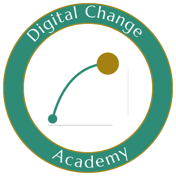

Certificación Cultura y Cambio ADN IA
La IA de tus clientes no está generando retorno. El líder debe decidir qué detener, qué recuperar y cómo hacerlo. Tú puedes habilitar esa decisión.
Un mes, en línea y con colegas: sales con una oferta que puedes cobrar al líder de la iniciativa de IA, dos entregables listos para tu próximo cliente y tu certificación como «Experto Cultura y Cambio ADN IA», verificable en Accredible.
- Inicio: 20 de enero de 2027
- Hasta 4 horas por semana
- Verificable en Accredible
Primera cohorte · Sin pago al solicitar · Garantía de devolución tras la fundamentación
¿Esta certificación es para ti?
Esta es la decisión correcta si…
- Eres experto en Cultura o Gestión del Cambio en proyectos de adopción de la IA.
- Tus clientes ya invirtieron en IA y no ven el impacto en los KPIs que sí importan.
- Lideras la adopción de la IA desde tecnología y necesitas movilizar a las personas.
- Quieres contar con una oferta de servicios con soluciones específicas para esa conversación.
Esta NO es la decisión que debes tomar si…
- Buscas actualización superficial de los modelos de cultura y cambio de siempre, ahora para la era IA.
- Buscas dominar herramientas de IA en tu práctica actual de cultura y cambio.
- Quieres un curso donde consumas contenido teórico tipo Netflix sin aplicación a un caso real.
- Lideras la adopción de la IA desde TI y tu foco hoy es la implementación técnica, no movilizar a las personas.
Sin prerrequisitos: no necesitas una certificación previa ni un cliente real.
La pregunta ya no es cómo usar la IA. Es cuál iniciativa se detiene y cuál se rentabiliza.
Fuente: McKinsey, The State of AI in 2026, agosto de 2026 — 1.719 ejecutivos encuestados en 97 países.
Esa brecha de 43 puntos ya está en la agenda de tus clientes, y alguien le llevará al líder la evidencia para decidir. La pregunta es si serás tú.
Licencias activas, pilotos estancados y un KPI que no se mueve.
Nadie sabe con certeza si el freno está en la herramienta o en cómo la usan las personas.
Detener, recuperar o esperar evidencia, con fecha.
La decisión es suya, pero necesita evidencia sobre cómo se usa la IA, no solo sobre la herramienta.
En quien lleva la evidencia a la conversación con el líder.
Pasas de operar la adopción a habilitar la decisión y derivas lo que exige un diagnóstico especializado.
Al certificarte podrás cobrar por tu portafolio actualizado a la era de la IA.
La conversación con el líder cuya iniciativa de IA no genera retorno.
Llegas a un comprador que hoy no encuentra esa solución contigo. Con el Brief como entregable y el precio que tú defines.
Tu entregable estrella, con las horas que ahorra la IA a la vista.
Diagnóstico cultural, plan de comunicación o mapa de actores: muestras el tiempo optimizado y cobras con más argumento.
Cobras a quien responde por la IA, con entregable propio.
Tu comprador es el líder de la iniciativa IA que debe mover el KPI. Cotizas el diagnóstico y el Brief como entregable, no por tu hora.
Todo respaldado por tu certificación, verificable en Accredible.
Ejemplo: a USD 100 por hora, esta inversión equivale a menos de 3 horas de tu trabajo. Escribe tu tarifa para calcular la tuya.
De operar el cambio a habilitar la decisión del líder, en cuatro experimentos.
Pasas de operar el cambio a habilitar la decisión del líder en cuatro movimientos: entender lo que frena la conducta, rediseñar tu entregable estrella con la IA, preparar la conversación con el líder y medir el caso. Cada semana produce algo tuyo, que presentas en tu audición de certificación, tu presentación final ante César Lozano.
- Día 0 · Fundamentación ágil 120 minutos onlineEl marco de la certificación y las cuatro barreras que frenan la adopción, con César LozanoTu caso de práctica y tu primera hipótesis
- Semana 1 · Experimento 1Lo que frena la conducta se identifica antes de intervenirlaUn diagnóstico de creencias por rol
- Semana 1 · Experimento 2Tu entregable estrella, rediseñado con la optimización de tiempo de intervención gracias a la IAEl portafolio rediseñado con el mapa de dónde ayuda la IA
- Semana 2 · Experimento 3De lo identificado a lo propuesto: tu conversación con el líder que debe mover el KPIEl Brief para clientes (un documento de una página), con tu propio uso de la IA como ejemplo
- Semana 2 · Experimento 4Tu práctica evoluciona para sostener la adopción y medir el retorno de la IA en tu casoTu Hoja de Ruta Evolutiva
- Semana 3Ensayo de cierre: tu nueva oferta frente a la decisión de ReturnAITu ensayo contrastando tu nueva oferta con la decisión que enfrenta Adalid en la novela
- Semana 4 · 120 minutos onlineAudición de certificación y mentoring de cierre con César LozanoTu certificación en Accredible
Trabajas en equipo con tus pares críticos y recibes retroalimentación de la academia en 24 horas.
Tu práctica se mantiene. Solo la actualizas bajo tres supuestos.
ADKAR, Kotter, McKinsey o tu modelo propio no están equivocados: se diseñaron para otro tipo de cambio. En la certificación auditas tu práctica y actualizas tres supuestos.
- Que la persona adopta solo con razones.Frente a la IA, para usarla, pesan las creencias y la emoción, no solo las razones de ganancia.
- Que el cambio llega a un estado final estable.La IA cambia de forma continua. No hay estado final: hay un ajuste permanente que se sostiene y se mide.
- Que el equipo de cambio opera la adopción.La adopción ocurre dentro de cada proceso. Quien responde por el KPI la lidera; tú habilitas esa decisión.
Liderar la IA es decidir qué detener y qué rentabilizar.
Facilita César Lozano, autor de ReturnAI y fundador de Digital Change Advisors. Conduce la fundamentación ágil y la sesión de mentoring de cierre con las audiciones de certificación; el Equipo de Digital Change Academy te acompaña a lo largo de los experimentos. Detrás está una academia con 57+ consultores certificados en Latinoamérica.
Adalid Puentes tiene USD 8,2 millones invertidos en IA que no aparecen en el estado de resultados y 120 días para demostrar su retorno. Es la historia de ReturnAI, la novela que lees en la semana 3: la recibes completa al cierre de la semana 2.
Consultores que ya se certificaron con nuestra academia.
Sus testimonios hablan de programas en los frameworks ágiles de DCA: el mismo equipo y el mismo estándar que esta certificación.
«Los clientes necesitan ver pronto resultados positivos en sus colaboradores, la forma en que se relacionan, la forma en que logran ver la Era Digital en sus vidas y por ende los beneficios que esto trae a las organizaciones a nivel económico.»
«Quería entender cómo apoyar a mis clientes en la gestión de los nuevos desafíos humanos que enfrentan las organizaciones en un mundo cada vez más digital y complejo. […] El resultado: un modelo novedoso, orientado a la acción y con impactos visibles desde el inicio.»
«Recomiendo la academia sin dudarlo —y así lo escribí en mi artículo en LinkedIn— como la opción más completa, integrada y flexible para especializarse en gestión del cambio en la Era Digital.»
Ver 3 testimonios más
«Estaba buscando una alternativa realmente disruptiva que me permitiera llevar a mis clientes a lograr una transformación efectiva, rápida y sostenible.»
«Hoy me siento parte de una comunidad donde la mentoría, la creatividad, el respeto y la generosidad no son conceptos abstractos, sino experiencias vividas cada día.»
«Recomiendo la especialización porque el plan de estudios es actualizado y relevante para las tendencias actuales del mercado, los guías son expertos en el campo y están activos en la investigación constante.»
Primera cohorte: comienza el miércoles 20 de enero de 2027.
- Primera cohorte exclusiva, con el autor. Trabajo con colegas en equipos de dos o tres; César Lozano conduce la fundamentación ágil y el mentoring colectivo con tu audición de certificación.
- Anticípate y lidera el mercado. Tu oferta y tu certificación, listas justo en el momento en que tus clientes empiecen a preguntar qué hacer con la IA que no genera retorno.
Valor de referencia
USD 497
Valor comercial de la certificación de la segunda cohorte en adelante.
Tu inversión · primera cohorte
USD 297
Beneficio solo para la primera cohorte, si es tu primer programa con DCA.
Con certificación DCA previa
USD 197
Beneficio para los profesionales que ya tienen una certificación de DCA.
Beneficios que recibes
- Certificación «Experto Cultura y Cambio ADN IA», emitida por Digital Change Academy y verificable en Accredible.
- Fundamentación ágil en vivo con César Lozano (120 minutos): el marco de la certificación.
- Cuatro experimentos con retroalimentación por correo en 24 horas.
- Trabajo en equipo con tus pares críticos para contrastar tu criterio.
- Copia digital de la novela ReturnAI completa, al cierre de la semana 2.
- Tu «Brief para Clientes» y tu «Hoja de Ruta Evolutiva» revisada.
- Audición de certificación y mentoring de cierre con César Lozano.
Cada cohorte es un grupo reducido y exclusivo. El cupo se confirma con el pago, cuando el Equipo Facilitador responde a tu solicitud. Puedes pagar con tarjeta de crédito en cualquier país o en Colombia, además, con transferencia bancaria a Bancolombia.
Garantía. Si al final de la fundamentación, decides que la certificación no es para ti, te devolvemos el 100 % de la inversión.
Solicita la reserva de tu cupo en la primera cohorte.
- Envías tu solicitudDiligencia el formulario de reserva, con el mayor detalle posible. Toma 3 minutos.
- Respuesta en 48 horasRevisamos tu perfil y confirmamos tu cupo en orden de llegada.
- Confirmas con el pagoY recibes la invitación a la sesión de fundamentación el 20 de enero.
¿Y si no es para mí?
Si al final de la fundamentación decides que no, te devolvemos el 100 % de la inversión.
¿Cuánto tiempo requiere?
Hasta 4 horas por semana durante un mes, más la fundamentación en vivo de 2 horas.
¿Necesito certificación previa?
No. Sin prerrequisitos y sin necesidad de un cliente real.
Lo que necesitas aclarar antes de reservar tu cupo.
¿Cómo recupero lo que invierto?
Por tres vías: una oferta nueva que puedes cobrar (la conversación con el líder, con el Brief como entregable y el precio que tú definas), tu entregable estrella actualizado y un presupuesto distinto al que hoy te contrata, todo respaldado por una certificación verificable en Accredible. Haz la cuenta con tu tarifa en la sección «Cómo recuperas tu inversión en esta certificación».
¿Qué certificación obtengo?
La Certificación «Experto Cultura y Cambio ADN IA», emitida por Digital Change Academy en Accredible: un enlace verificable que puedes incluir en tus propuestas y en tu perfil profesional. Se obtiene en la semana 4, en tu audición de certificación con César Lozano, con la evidencia que construiste en tu caso.
¿Cuánto tiempo requiere?
Hasta 4 horas por semana en las semanas 1 y 2: la fundamentación ágil es de 2 horas y dos experimentos por semana, de unas dos horas cada uno. En la semana 3 lees la novela y escribes un ensayo breve, y en la semana 4 preparas tu audición en dos horas y asistes a la audición en la sesión de mentoring grupal de 2 horas en vivo.
¿Y si no puedo asistir en vivo?
La fundamentación queda grabada para que lo veas después. Al cierre si no puedes asistir en la fecha de tu audición de certificación, acordamos una segunda fecha.
¿Y si no es para mí?
Si al terminar la fundamentación decides que la certificación no es para ti, te devolvemos el 100 % de lo que pagaste.
¿Necesito un cliente real o expongo datos de mis clientes?
No. El caso es simulado y sin datos de clientes: una iniciativa de IA que no está moviendo el KPI que sí importa. Cada quien construye el suyo y no necesitas compartir información de ninguna organización.
¿Necesito dominar la IA?
No. La usas, declarándola, para validar al final el criterio con el que construyes primero tus entregables, y calibras dónde ayuda y dónde no. Nunca con datos reales de clientes.
¿Necesito ser experto en lo humano si vengo de TI?
No. La adopción de la IA se decide en la conducta de las personas, y esa conducta se trabaja con método: no exige experiencia previa en cultura o en gestión del cambio. Trabajas sobre un caso de práctica, con experimentos concretos, un diagnóstico de creencias por rol, el Brief para el líder en el cliente, tu Hoja de Ruta Evolutiva, junto a tus pares críticos y con retroalimentación por correo en 24 horas. Tu mirada desde tecnología es muy valiosa y suma: la adopción acelerada necesita las dos.
¿Necesito una certificación previa?
No. La certificación no tiene prerrequisitos y parte del modelo de transformación cultural y/o gestión del cambio que usas hoy.
¿Cómo se paga el monto de la inversión?
Con tarjeta de crédito desde cualquier lugar del mundo y además, por transferencia a Bancolombia, solo en Colombia. Cuando el Equipo Facilitador confirma tu cupo, te envía el enlace con las instrucciones de pago. No pagas nada al enviar la solicitud.
¿Cuándo empieza la certificación?
La primera cohorte comienza el miércoles 20 de enero de 2027. Las fechas específicas de las actividades a lo largo del programa se comunican a quienes solicitan la reserva de su cupo.
La decisión sobre la IA de tu cliente ya tiene dueño. Falta quien la habilite, y puedes ser tú.
Primera cohorte: comienza el miércoles 20 de enero de 2027, con la tarifa que no se repite.
Quiero mi cupo →Sin pago al solicitar · Garantía de devolución tras la fundamentación